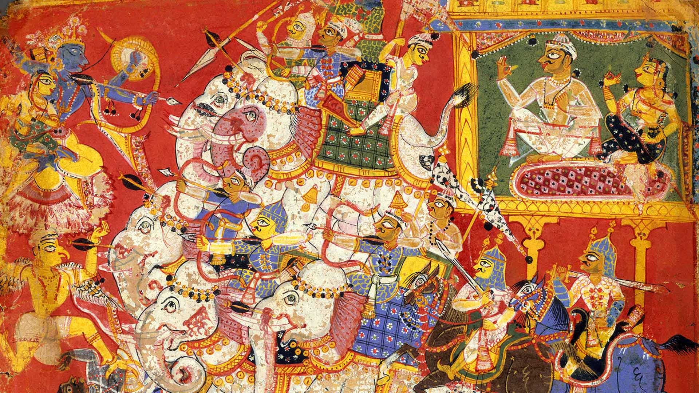

Contexto
En el Naraka reina el dios Iama, a quien sirven muchos seres que se ocupan en distintos oficios, entre los cuales está el de seguir el curso de las enfermedades y apoderarse de las almas que han perecido en los combates y siniestros, presentándolas al tribunal de Yama.
En los Patalas hay un registro donde se anotan todas las acciones de los hombres, lo cual se tiene en cuenta para que las almas vayan a habitar uno u otro de los Patalas, según sus culpas.
Los castigos que reciben los condenados son terribles, como los de hacer pasar al que se castiga por el ojo de una aguja, andar sobre el filo de un sable y con las manos atadas, exponer al condenado a los picotazos de los buitres y otras aves de rapiña, soportar grandes pesos, nadar en charcos de líquidos asquerosos, etc.
Pasado el tiempo de purgación, o bien al cabo de una yuga (era), en que cambian las cosas, pasa el alma a habitar el cuerpo de un animal, luego el de otro y, por fin, el de un hombre. Después de una serie de metempsicosis, se une en el gran ser que es el alma universal del mundo.
Precio y servicio
Horarios: Disponible de martes a viernes, que los lunes son duros, a cualquier hora y en cualquier lugar.
Requisitos: Estar muerto y ser un pecador o un politico.
Servicios: Un camino relajante por pedruscos al rojo vivo, un amputamiento gratuito y pizza con piña.
Precio: 240 almas.